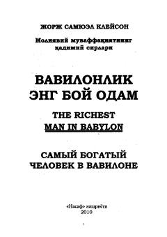

VEQadimiy Bobil donoligi asosida moliyaviy erkinlikka erishish bo'yicha amaliy qo'llanma.
Ushbu asar qadimiy Bobil donoligi asosida moliyaviy erkinlikka erishish va pulni to'g'ri boshqarish sirlarini ochib beradi. Kitobda boylik orttirish, jamg'arish va uni ko'paytirishning amaliy qoidalari hayotiy misollar orqali tushuntirilgan.